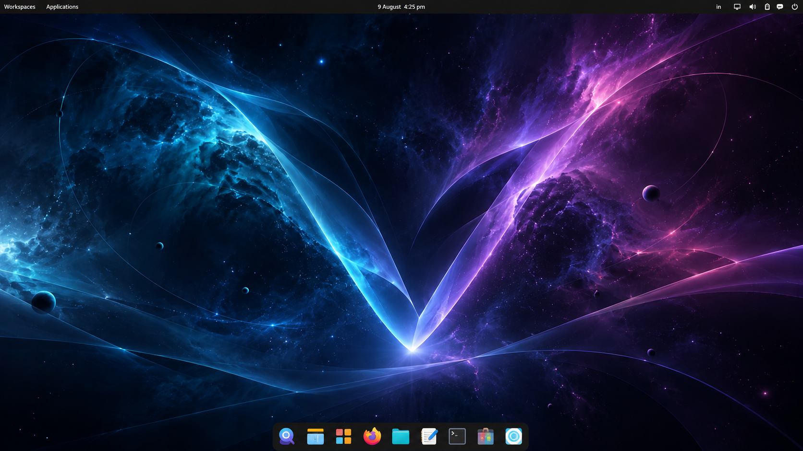
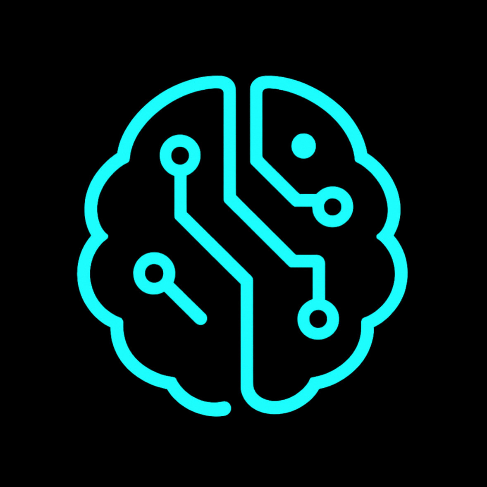
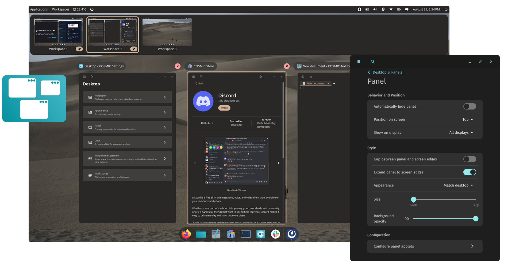
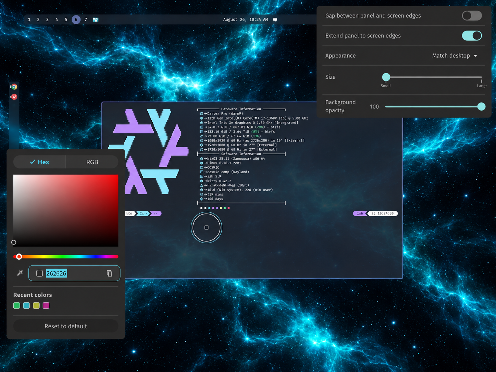

Made for real work.
Windows, workspaces, files, apps, terminals, browsers and creative tools — a complete Linux desktop for the things you already do every day.
venixOS is a modern Linux desktop integrated with PUKNO.
A local, private AI layer, that understands your work, remembers what you choose, and keeps you in control.


venixOS is designed to be your everyday operating system: fast, focused and familiar enough to disappear into your work. The difference is that personal AI is treated as part of the system, not another tab.
Windows, workspaces, files, apps, terminals, browsers and creative tools — a complete Linux desktop for the things you already do every day.
With your permission, files, research, documents, projects and knowledge can become useful context that helps PUKNO understand what you mean.
Ask, summarize, recall, connect and continue your work without rebuilding context every time you open an AI chat.
venixOS uses COSMIC as its desktop foundation: modern workspaces, flexible panels, productive window management and deep customization, shaped into a distinct venixOS experience.
Organize the desktop around the task in front of you. Tile when you need focus. Float when you need freedom. Move between workspaces without losing your train of thought.

venixOS will ship with its own visual identity, while keeping COSMIC’s flexibility underneath. Theme the desktop, tune your panels and shape the environment around the way you think.

Instead of asking you to explain your life to a blank chatbot, venixOS is being designed so PUKNO can help from the context you choose to make available.
PUKNO can become a system-level companion for recall, research and continuity. Search your own knowledge in natural language, reconnect to unfinished work, and bring the right personal context into the moment you need it.
Research in the browser, shape the idea in your notes, then build in the terminal. PUKNO is planned to carry only the context you approve between each step.
Concept interaction · user-controlled contextRead, compare and collect sources in the tools you already use.
Choose which documents and sessions become working context.
Surface the relevant decisions when you move into your editor or terminal.
Let PUKNO prepare an action, then review it before anything changes.
The current design keeps routine retrieval local and escalates only the minimum required context for larger workloads.
The local-first fallback you documented yesterday applies to this retrieval path. PUKNO can prepare the implementation note.
AI should extend your workflow, not replace it. venixOS keeps the full Linux desktop underneath — files, development tools, media, browsers and the apps you choose.
venixOS is being designed around local-first intelligence. PUKNO should use your private context to help you — not turn that context into someone else’s dataset.
The design direction keeps personal context and routine intelligence close to the machine where your work happens, using local models when they are the right fit.
Planned controls make it clear which applications, files and sessions PUKNO can use, with the ability to pause or remove access.
PUKNO may prepare cross-desktop actions, but consequential changes should remain visible, reviewable and under the user’s control.
venixOS is planned around an Ubuntu foundation and the COSMIC desktop, then customized for a world where personal AI is part of the computer itself.
A focused Linux operating system for daily work, with a personal context assistant built deeply enough to actually make AI useful.